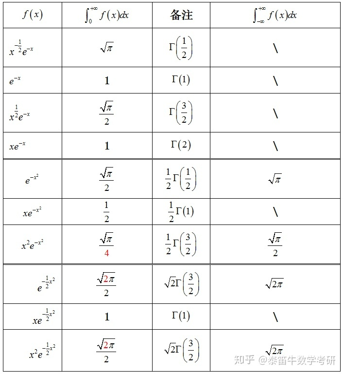

20考研数学复习：一图教你快速掌握伽马函数定义Γ(x)=∫0∞e−ttx−1dtx>0\Gamma(x)=\int_{0}^{\infty} e^{-t} t^{x-1} d t \quad x>0Γ(x)=∫0∞e−ttx−1dtx>0性质Γ(n)是光滑的\Gamma(n)是光滑的Γ(n)是光滑的Γ(n+1)=nΓ(n) n>0\Gamma(n+1)=n\Gamma(n)\ \ \ \ \ \ n>0Γ(n+1)=nΓ(n) n>0Γ(1)=1 Γ(12)=π\Gamma(1)=1\ \ \ \ \Gamma(\frac{1}{2})=\sqrt{\pi}Γ(1)=1 Γ(21)=π取值Γ(n+1)=n!\Gamma (n+1)=n !Γ(n+1)=n!Γ(n+1)=nΓ(n)=n(n−1)Γ(n−1)=n!\Gamma(n+1)=n \Gamma(n)=n(n-1) \Gamma(n-1)=n !Γ(n+1)=nΓ(n)=n(n−1)Γ(n−1)=n!Γ(n+12)=1⋅3⋅5⋯(2n−1)2nπ\Gamma\left(n+\frac{1}{2}\right)=\frac{1 \cdot 3 \cdot 5 \cdots(2 n-1)}{2^{n}} \sqrt{\pi}Γ(n+21)=2n1⋅3⋅5⋯(2n−1)π应用为什么∫−∞∞u2e−u22 du=2π?为什么\int_{-\infty}^{\infty} u^{2} \mathrm{e}^{-\frac{u^{2}}{2}} \mathrm{~d} u=\sqrt{2\pi}?为什么∫−∞∞u2e−2u2 du=2π?$I = \int_{0}^\infty t^2 e^{-t^2/2} dt$∫0∞t2e−t2/2dtLet t2/2=sthen,I=2∫0∞s1/2e−sds=2Γ(3/2)=2π2=π2\int_{0}^{\infty} t^{2} e^{-t^{2} / 2} d t\\\\Let\ t^{2} / 2=s\\then, I=\sqrt{2} \int_{0}^{\infty} s^{1 / 2} e^{-s} d s\\\\\begin{array}{l}\\=\sqrt{2} \Gamma(3 / 2) \\\\=\sqrt{2} \frac{\sqrt{\pi}}{2} \\\\=\sqrt{\frac{\pi}{2}}\\\end{array}∫0∞t2e−t2/2dtLet t2/2=sthen,I=2∫0∞s1/2e−sds=2Γ(3/2)=22π=2π